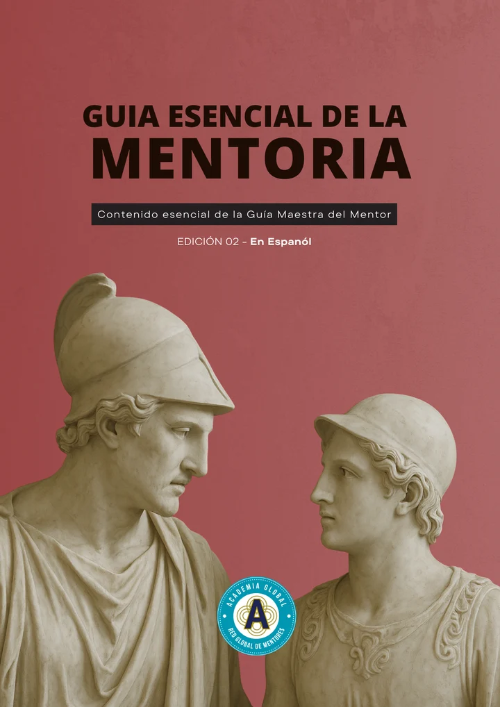
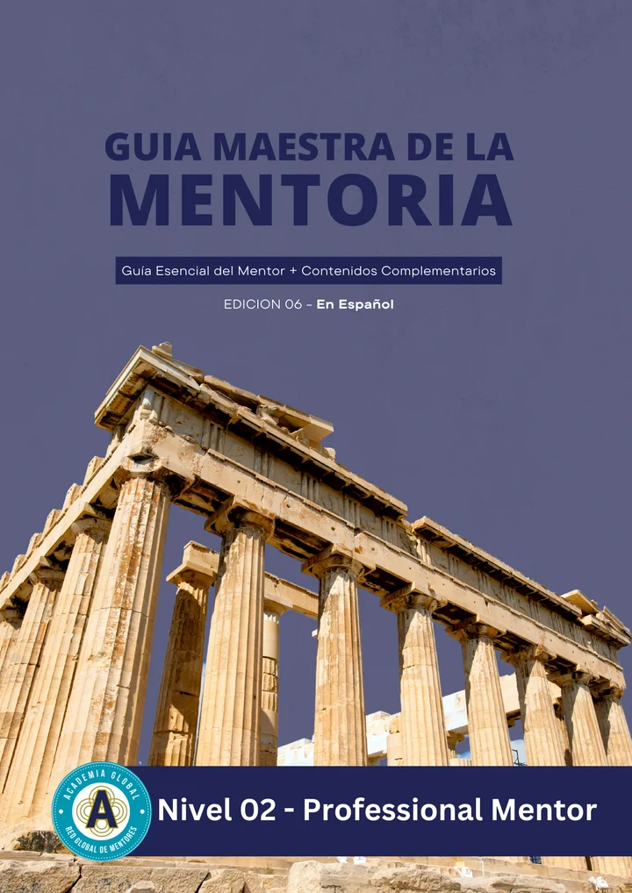
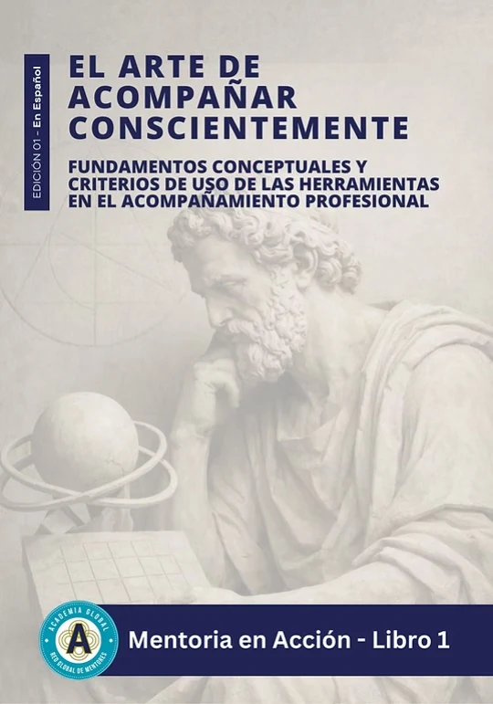
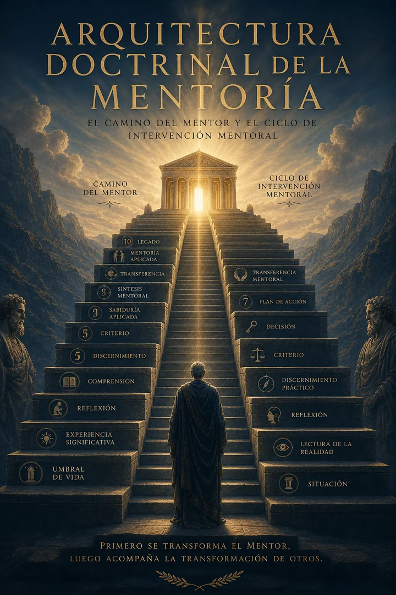

Da intuição ao exercício profissional: conteúdos da Academia Global RGM e da Editorial RGM, ordenados segundo o ponto do seu caminho.



Tríade para profissionais
Mentoria para profissionais do desenvolvimento humano
Guia Integral de Disciplinas · Guia Essencial · Manual Profissional
Uma formação intensiva para profissionais de disciplinas afins que procuram integrar a mentoria com excelência e padrão internacional.
Ver a tríade →


Manual para universidades
Guia Mestre da Mentoria
Nível 01 · Nível 02 · Nível 03
A obra de referência internacional para compreender e exercer a mentoria com rigor, ética e padrão profissional, em três níveis: Fundamentos, Dinâmica Relacional e Práxis e Padrões.
Ver o manual →Tríade fundacional
A mentoria como caminho humano
A origem · Os limiares · A disciplina
Compreender o que é a mentoria antes de tentar exercê-la: uma experiência humana consciente, anterior a qualquer função, certificação ou método.
Ver a tríade →


Tríade funcional
A arte de acompanhar conscientemente
Série Mentoria em Ação
Para mentores em exercício: uma arquitetura formativa que articula critério, ação e reflexão, as três dimensões inseparáveis da prática consciente.
Ver a tríade →


Últimas edições
Leitura recomendada
EPCM-RGM · Arquitetura Doutrinal · 15 Metacompetências
Acompanhar a partir da experiência para desenvolver consciência, critério, responsabilidade e legado: a base metodológica que todo o mentor especialista deve dominar.
Ver as edições →Coleção em desenvolvimento
Manuais do Mentor Especialista
Guias estratégicos com modelos, ferramentas e práticas para diferentes nichos: 12 manuais de especialização, quatro já editados.
Acompanhamento de doenças críticasGestão de projetosGestão e liderança corporativaEducação contínua
Grátis para Membros Ativos →